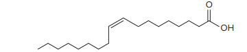

Cacau, fruto da árvore
Theobroma cacao , e seu produto final. No detalhe, a fórmula de esferas da teobromina (C
7 H
8 N
4 O
2 ), principal composto orgânico presente no chocolate.
Africa Studio/Shutterstock.com
Há uma árvore que cresce nos trópicos chamada
Theobroma cacao , um nome que lhe foi dado em 1735 pelo biólogo sueco Linnaeus. A raiz do nome vem do grego [
theo=
deus;
bromina=
comida], que significa “alimento dos deuses”.
O que seria o “alimento dos deuses”? O chocolate, é claro. [...]
Os compostos do carbono são a base de todas as espécies vivas do planeta. O chocolate certamente se encaixa em um capítulo sobre Química Orgânica, assim como os quase 400 compostos orgânicos existentes no chocolate.
Um principal composto no chocolate é o composto orgânico teobromina, um alcaloide amargo da planta do cacau. Apesar do nome, não há bromo na molécula; seu nome deriva da subdivisão biológica da planta do cacau,
Theobroma . Na medicina, a teobromina pode ser utilizada como vasodilatador, diurético e estimulador cardíaco. [...] Mas também pode causar agitação, tremores, insônias e ansiedade. [...]
KOTZ, John C. et al.
Química geral e as reações químicas . Noveritis do Brasil (Trad.). São Paulo: Cengage Learning, 2015. v. 2. p. 1078-9.
A teobromina é uma molécula que pertence à classe das xantinas (do grego
xanthos , que significa “amarelo”), uma base nitrogenada cristalina, na qual a cafeína também se inclui. Quais as diferenças na estrutura química dessas moléculas?
Como os átomos de carbono podem ser classificados em uma cadeia?
Neste capítulo serão abordadas as habilidades
EM13CNT104
,
EM13CNT205
e
EM13CNT303
.
Classificação dos átomos de.png>carbono nas cadeias carbônicas
O carbono é o elemento químico principal da Química Orgânica. Já sabemos que ele é tetravalente, pode formar cadeias carbônicas grandes e tem o hidrogênio como elemento químico mais comum para realizar as ligações necessárias para
completar seu octeto (lembrando que outros também podem aparecer na cadeia – os principais são oxigênio, nitrogênio, halogênio e enxofre).
Agora vamos aprender a classificar cada átomo de carbono dentro de uma cadeia. O critério utilizado será
a quantos átomos de carbono ele está ligado , não importando se as ligações são simples, duplas ou triplas.
Carbono primário : ligado a
um ou
nenhum átomo de carbono.
Carbono secundário : ligado a
dois átomos de carbono.
Carbono terciário : ligado a
três átomos de carbono.
Carbono quaternário : ligado a
quatro átomos de carbono.
Vamos analisar essa classificação dos átomos de carbono na molécula do isoctano, um dos componentes da gasolina.
Conforme o critério de classificação anteriormente descrito, vamos analisar apenas a quantos outros átomos de carbono o carbono em questão está ligado. Assim, vamos deixar a cadeia carbônica representada sem os átomos de hidrogênio,
para melhor visualização:
Analisando a cadeia carbônica do isoctano, podemos encontrar:
Veja outros exemplos, com a mesma legenda:
Classificação das cadeias carbônicas
Quando temos uma ou mais características que se repetem, criamos classificações. Partindo desse princípio, químicos estabeleceram critérios para descrever a maneira como os átomos estão unidos em uma cadeia.
Cadeias aromáticas
São cadeias que apresentam pelo menos um
anel aromático . O
benzeno , que é um anel aromático, é um líquido incolor, altamente inflamável e de cheiro forte e característico; por isso, compostos que contêm benzeno também são chamados de
compostos aromáticos . Alguns compostos que apresentam anel aromático foram extraídos de extratos de plantas de odores agradáveis, como o ácido benzoico, obtido de um extrato vegetal denominado goma de benzoína – retirado
de uma árvore nativa das ilhas de Java e Sumatra, na Indonésia.
A fórmula estrutural do benzeno tem a forma de um hexágono, formado por seis átomos de carbono e seis átomos de hidrogênio, além de três ligações duplas alternadas (uma ligação simples alternada com uma ligação dupla, entre carbonos).
As três ligações duplas poderiam ter sido escritas no lugar das ligações simples e vice-versa. Veja na figura a seguir a estrutura do benzeno identificada por A e por B.
No entanto, nenhuma dessas duas estruturas representam bem o benzeno, pois os elétrons não se localizam nem na forma representada em A nem na representada em B, estando deslocalizados. A esse fenômeno damos o nome de
ressonância – deslocalização das ligações duplas. Os elétrons dessas ligações estão espalhados pelos seis carbonos no ciclo.
As setas azuis visualizadas na estrutura do benzeno A mostram as alterações nas posições dos pares de elétrons compartilhados e como será convertida na estrutura do benzeno B.
Devido à ressonância, a representação mais utilizada para o benzeno é uma circunferência no centro do anel, omitindo-se as ligações duplas. Observe:
É importante ressaltar que o comprimento da ligação simples é diferente do da ligação dupla: na simples, a distância entre os centros dos dois átomos de carbono mede 0,154 nm (1 nm
5
102
9 m); na dupla, essa distância mede 0,134 nm. Com essa representação, estamos indicando que,
no benzeno, a distância entre os átomos de carbono é intermediária entre uma ligação simples e uma dupla . Assim, estamos considerando que todas as distâncias entre os carbonos do benzeno medem 0,144 nm (média entre
os valores dos comprimentos das ligações simples e dupla).
A seta↔ indica que o benzeno é formado por um
misto de ambas as estruturas . Não confunda com a seta de equilíbrio químico:⇌ .
O ácido acetilsalicílico é um exemplo de composto orgânico com anel benzênico em sua molécula, destacado em vermelho a seguir.
Cadeias aromáticas mono e polinucleares.png>(condensadas ou isoladas)
Se a cadeia for formada por apenas
um anel benzênico , ela será
mononuclear ; já se ela apresentar
dois ou mais anéis benzênicos , ela será
polinuclear . As cadeias polinucleares podem, ainda, ter os anéis na forma
condensada (juntos) ou
isolada (separados) .
Questão resolvida
1
Uece 2016 O benzeno é usado principalmente para produzir outras substâncias químicas. Seus derivados mais largamente produzidos incluem o estireno, que é usado para produzir polímeros e plásticos, fenol, para resinas
e adesivos, e ciclohexano, usado na manufatura de nylon. Quantidades menores de benzeno são usadas para produzir alguns tipos de borrachas, lubrificantes, corantes, detergentes, fármacos, explosivos e pesticidas. O
benzeno não é representado apenas por uma estrutura de Lewis, mas por mais de um arranjo para descrever sua estrutura, que corresponde ao efeito mesomérico ou ressonância e é identificada
por ser bastante estável e agir como se tivesse isoladamente ligações simples e ligações duplas.
pelas distâncias entre os átomos de carbono das ligações simples (1,54 Å) e das ligações duplas (1,34 Å).
pela variação da posição dos elétrons s (sigma) que provocam mudanças nas posições dos átomos de carbono.
por possuir distância intermediária entre os átomos de carbono, comparada com a distância da ligação simples e a distância da ligação dupla.
Resolução:
Alternativa: D A distância entre C E C é 1,54 Å; e a distância entre C Ê C, 1,34 Å. Calculando a distância intermediária entre os átomos de carbono no benzeno, temos: Média 1,54 + 1,34 /2 2 = 1,44 Å As ligações π
são deslocalizadas.
Cadeias alifáticas
São cadeias que
não apresentam anel aromático . Elas podem ser classificadas de acordo com quatro critérios:
aberta ou fechada;
normal ou ramificada;
saturada ou insaturada;
homogênea ou heterogênea.
Quanto à presença de ciclo(s): aberta (acíclica) ou fechada (cíclica)
Uma cadeia pode ser
aberta (ou acíclica) se a sequência de átomos de carbono que a compõe não formar um ciclo (uma figura geométrica, como um triângulo, um quadrado, um pentágono, um hexágono etc.).
Mais
A química do chocolate, A Química das Coisas.
Veja neste vídeo alguns procedimentos químicos necessários para que a semente do cacau se transforme em um delicioso alimento que conhecemos: o chocolate. O idioma falado pela apresentadora é o português de Portugal, mas, caso você tenha dificuldade para
entender, existe a opção de ativar legendas, o que pode facilitar a compreensão.
Uma cadeia pode ser fechada (ou cíclica) se a sequência de átomos de carbono que a compõe formar um ciclo. Desse modo, se partirmos de um átomo de carbono, será possível retornarmos a ele percorrendo a cadeia em qualquer sentido
(horário ou anti-horário).
Também é possível classificarmos a cadeia como
mista . Para isso, ela deve ter uma parte da cadeia fechada e uma parte aberta.
Quanto à presença de ramificações: normal ou ramificada
Uma cadeia pode ser classificada como
normal quando apresentar uma única sequência de átomos de carbono. Nela, encontraremos apenas átomos de carbono primários e secundários.
Observe que a segunda cadeia não é ramificada, pois não temos mais de uma sequência de átomos de carbono. Há um oxigênio “pendurado” no carbono dois, mas o critério de classificação se baseia em haver ou não mais de uma sequência
de átomos de carbono – e, nesse exemplo, não há. O mesmo vale para o terceiro exemplo: a cadeia é normal, tendo apenas o formato de um “L”, em que há uma única sequência de átomos de carbono. Assim, uma cadeia normal não necessariamente
precisa ser uma linha reta de carbonos; ela pode ter formato de “L”, “U”, “V” e continuar sendo normal.
Uma cadeia é classificada como
ramificada se ela tiver mais de uma sequência de átomos de carbono, apresentando bifurcações. Nela, encontraremos átomos de carbono terciários e quaternários.
Observe o primeiro exemplo da sequência anterior. Ao chegarmos ao carbono dois, devemos escolher se continuamos reto na sequência de carbonos ou se descemos. Isso torna a cadeia ramificada. Usando novamente as letras do nosso alfabeto como referência,
uma cadeia em formato de “X” ou “Y” seria classificada como ramificada. Na próxima unidade, estudaremos esses carbonos que ficam “pendurados” nas cadeias marcadas pelo pontilhado, chamados de
ramificação .
Quanto à presença de insaturação: saturada ou insaturada
Uma cadeia será classificada como
saturada se existirem apenas ligações simples entre carbonos.
Observe que a segunda molécula apresenta ligação dupla, mas é uma ligação entre carbono e oxigênio; logo, a cadeia é saturada.
Uma cadeia será classificada como
insaturada se ela apresentar uma ou mais ligações duplas ou triplas entre carbonos.
Quanto à presença de heteroátomo: homogênea ou heterogênea
Uma cadeia será classificada como
homogênea se não houver heteroátomo (átomo diferente de carbono e hidrogênio) na sequência de átomos de carbono, interrompendo-a.
Note que as duas primeiras cadeias contêm átomos de oxigênio, mas eles não estão dispostos entre dois átomos de carbono; logo, as cadeias são homogêneas.
Uma cadeia será classificada como
heterogênea se ela apresentar heteroátomo.
Para classificar uma cadeia carbônica, devemos usar todos os critérios que estudamos. As classificações são independentes umas das outras (uma não exclui a outra).
Em cadeias fechadas, é comum o uso de alguns
outros termos para sua classificação:
Alicíclica (alifática
+
cíclica): cadeia não aromática e cíclica.
Homocíclica (homogênea
+
cíclica): cadeia fechada e sem heteroátomo.
Heterocíclica (heterogênea
+
cíclica): cadeia fechada e com heteroátomo.
Veja alguns exemplos:
Aplicando conhecimentos
1
Desenhe a fórmula estrutural do benzeno. Na sequência, escreva sua fórmula molecular e mínima.
2
Classifique os átomos de carbono e a cadeia carbônica na molécula da vanilina, cuja fórmula estrutural está representada a seguir.
3
Escreva a fórmula molecular para a cadeia aromática polinuclear seguinte, o antraceno.
4
Com base na fórmula do composto orgânico representado a seguir, assinale a alternativa que indica, respectivamente, o número total de ligações duplas e triplas e o número de átomos de hidrogênio.
1, 3, 5
2, 3, 3
1, 2, 3
2, 3, 1
1, 2, 1
5
Um composto orgânico de fórmula C
6 H
14 tem, em sua estrutura molecular, dois átomos de carbono terciários; os demais são primários. Monte a fórmula estrutural.
6
A xantina é uma base purínica encontrada nos tecidos e fluidos orgânicos, além de em algumas plantas. A cafeína, a teobromina e a teofilina são os principais derivados da xantina. Essas substâncias são encontradas em cafés,
chás, cacau, medicamentos, entre outros.
Analisando a fórmula estrutural dessas três substâncias, escolha a alternativa que indica, respectivamente, o número de átomos de carbonos secundários na cafeína, o número de átomos de carbono primários na teobromina e o número
de heteroátomos presentes na teofilina.
7, 7, 4
8, 2, 2
1, 6, 4
2, 2, 6
1, 5, 4
Consolidando saberes
1
Unifesp 2018 Analise a fórmula que representa a estrutura molecular do ácido oleico.

A cadeia carbônica do ácido oleico é homogênea ou heterogênea? Saturada ou insaturada?
Escreva as fórmulas molecular e mínima do ácido oleico.
2
Uece 2018 A coniina é um alcaloide venenoso. Suas propriedades tóxicas eram conhecidas desde a antiguidade e já eram usadas na época dos gregos como um veneno para ser administrado àqueles condenados à morte.
Coniina
Atente ao que se diz a seguir sobre essa substância:
Contém carbono terciário.
É um composto aromático.
É um composto nitrogenado heterocíclico.
Tem fórmula molecular C
8 H
17 N.
Está correto o que se afirma somente em:
I e II.
I, II e III.
III e IV.
IV.
3
Unigranrio-RJ 2017 O eugenol, ou óleo de cravo, é um forte antisséptico. Seus efeitos medicinais auxiliam no tratamento de náuseas, indigestão e diarreia. Contém propriedades bactericidas, antivirais, é também usado
como anestésico e antisséptico para o alívio de dores de dente. A fórmula estrutural deste composto orgânico pode ser vista abaixo:
O número de átomos de carbono secundário neste composto é:
2
3
7
8
10
4
UFRGS 2017 A geosmina é a substância responsável pelo cheiro de chuva que vem do solo quando começa a chover. Ela pode ser detectada em concentrações muito baixas e possibilita aos camelos encontrarem água no deserto.
A bactéria
Streptomyces coelicolor produz a geosmina, e a última etapa da sua biossíntese é mostrada abaixo.
Considere as seguintes informações, a respeito da 8,10-dimetil-1-octalina e da geosmina.
A 8,10-dimetil-1-octalina é um hidrocarboneto alifático insaturado.
A geosmina é um heterociclo saturado.
Cada um dos compostos apresenta dois carbonos quaternários.
Quais estão corretas?
Apenas I.
Apenas II.
Apenas III.
Apenas I e II.
I, II e III.
5
UEPG-PR 2016 Sobre a piperidina, de fórmula estrutural representada abaixo, assinale o que for correto.
01.
É uma molécula acíclica.
02.
Todos os átomos de carbono são hibridizados em sp
2 .
04.
É um composto de cadeia saturada.
08.
Apresenta heteroátomo.
Soma:
6
UEM-PR 2016 Considerando o composto abaixo, assinale o que for
correto .
01.
O oxigênio que forma apenas ligações simples é um heteroátomo.
02.
O composto possui cinco carbonos com hibridização sp
3 .
04.
O composto possui quatro carbonos primários.
08.
A cadeia carbônica possui duas insaturações.
16.
A molécula possui 14 ligações sigma e 2 ligações pi.
Soma:
7
Fepar-PR 2017 (Adapt.) O pior uso de armas químicas em civis no século XXI ocorreu em agosto de 2013, durante a guerra civil Síria, quando diversas áreas controladas ou disputadas nos subúrbios de Ghouta, em torno de
Damasco, foram atingidas por foguetes com o agente químico Sarin, que matou centenas de pessoas.
Esse gás foi classificado como arma de destruição em massa na resolução 687 das Nações Unidas, e a produção e o armazenamento foram proibidos na Convenção sobre Armas Químicas de 1993.
O Sarin é uma molécula quiral porque tem quatro substituintes quimicamente diferentes ligados ao centro de fósforo tetraédrico. Observe a estrutura na figura.
Com base nas informações, avalie as afirmativas.
( )
O Sarin é um composto de fórmula molecular C
4 H
10 FO
2 P.
( )
A molécula do gás Sarin apresenta cadeia aberta ramificada.
( )
Em uma molécula de gás Sarin existem 9 ligações do tipo
s
(s-sp
3 ).
( )
O ângulo correto das ligações do carbono é de 120
°
.
Superação
Unesp 2016 (Adapt.) Analise a fórmula que representa a estrutura do iso-octano, um derivado de petróleo componente da gasolina
De acordo com a fórmula analisada, é correto afirmar que o iso-octano
é solúvel em água
é um composto insaturado.
conduz corrente elétrica.
tem fórmula molecular C8H18.
No enem é assim
As questões selecionadas nesta seção são prioritariamente do Enem, mas questões de vestibulares diversos que apresentam características semelhantes aos itens do referido exame também foram usadas como recurso para estudo.
1
Enem 2019A utilização de corantes na indústria de alimentos é bastante difundida e a escolha por corantes naturais vem sendo mais explorada por diversas razões. A seguir são mostradas três estruturas de corantes naturais.
HAMERSKI, L.; REZENDE, M. J. C.; SILVA, B. V. Usando as cores da natureza para atender aos desejos do consumidor; substâncias naturais como corantes na indústria alimentícia.
Revista Virtual de Química , n. 3, 2013.
A propriedade comum às estruturas que confere cor a esses compostos é a presença de
cadeia conjugada.
cadeia ramificada.
átomos de carbonos terciários.
ligações duplas de configuração cis.
átomos de carbonos de hibridação sp³.
2
Uerj 2018 A exposição ao benzopireno é associada ao aumento de casos de câncer. Observe a fórmula estrutural dessa substância:
Com base na fórmula, a razão entre o número de átomos de carbono e o de hidrogênio, presentes no benzopireno, corresponde a:
3
Etec-SP 2016 Os fertilizantes podem ser definidos como qualquer material orgânico ou inorgânico (mineral), de origem natural ou sintética, que é adicionado ao solo com vistas ao suprimento de certos elementos essenciais
ao crescimento vegetal. Os fertilizantes são empregados, predominantemente, na forma sólida, contudo, podem ser aplicados também na forma de soluções ou suspensões.
Os fertilizantes mais usados são do tipo NPK, fontes de nitrogênio, fósforo e potássio, elementos essenciais às plantas.
A tabela apresenta possíveis compostos usados nos fertilizantes do tipo NPK.
Sobre o texto, é correto o que se afirma em:
Os fertilizantes só podem ser utilizados na forma sólida.
A ureia pode ser utilizada como um fertilizante nitrogenado.
A farinha de ossos pode ser utilizada como um fertilizante potássico.
A escória básica apresenta em sua constituição o elemento carbono.
Os fertilizantes potássicos apresentam em sua constituição o elemento sódio
4
UFJF-MG 2017 O Comitê Olímpico Internacional, durante as Olimpíadas Rio 2016, estava bastante atento aos casos de
doping dos atletas. A nandrolona, por exemplo, é um hormônio derivado da testosterona muito utilizado pela indústria farmacêutica para a produção de derivados de esteroides anabólitos.
Quantos carbonos terciários com hibridação sp
3 possui esse hormônio na sua estrutura molecular?
1
2
3
4
5
5
Uece 2017 A substância responsável pelo sabor amargo da cerveja é o mirceno, C
10 H
16 . Assinale a opção que corresponde à fórmula estrutural dessa substância.
6
IFSul-RS (Adapt.) Observe o remédio a seguir e sua composição.
O composto orgânico reproduzido apresenta várias características, dentre as quais, caracteriza-se como correta a
presença de anel benzênico com quatro ligações duplas alternadas.
existência de três átomos de carbono com hibridização sp.
massa molar aproximadamente igual a 200 g
?
mol2
1 .
presença de cinco ligações covalentes em eixos paralelos (ligação pi).
7
IFPE 2017 Há algumas décadas, fumar era moda. Nessa época, o cigarro não era considerado um vilão, até profissionais de saúde, como médicos, eram garotos-propaganda de marcas de cigarro e incentivavam o vício de fumar.
Com o passar dos anos, pesquisas mostraram que o cigarro é sim extremamente prejudicial à saúde. Estudos mostram que existem mais de 4000 substâncias químicas no cigarro, das quais, 50 são comprovadamente cancerígenas,
dentre elas, podemos citar: arsênio, polônio-210, DDT, benzeno e benzopireno. Abaixo temos as fórmulas estruturais de duas dessas substâncias que estão na lista das 50 substâncias cancerígenas, o benzeno e o benzopireno.
Em relação às substâncias benzeno e benzopireno, assinale a única alternativa CORRETA.
Tanto o benzeno quanto o benzopireno são hidrocarbonetos aromáticos.
O benzopireno apresenta hibridação sp
3 em todos os seus carbonos.
O benzeno, por ser polar, é uma molécula insolúvel na água já que a mesma é apolar.
Ambos são hidrocarbonetos que apresentam apenas carbonos secundários.
O benzopireno apresenta fórmula molecular C
20 H
16 .
8
Enem O lixão que recebia 130 toneladas de lixo e contaminava a região com o seu chorume (líquido derivado da decomposição de compostos orgânicos) foi recuperado, transformando-se em um aterro sanitário controlado, mudando
a qualidade de vida e a paisagem e proporcionando condições dignas de trabalho para os que dele subsistiam.
Revista Promoção da Saúde da Secretaria de Políticas de Saúde. .png>Ano 1, nº 4, dez. 2000 (adaptado).
Quais procedimentos técnicos tornam o aterro sanitário mais vantajoso que o lixão, em relação às problemáticas abordadas no texto?
O lixo é recolhido e incinerado pela combustão a altas temperaturas.
O lixo hospitalar é separado para ser enterrado e sobre ele, colocada cal virgem.
O lixo orgânico e inorgânico é encoberto, e o chorume canalizado para ser tratado e neutralizado.
O lixo orgânico é completamente separado do lixo inorgânico, evitando a formação de chorume.
O lixo industrial é separado e acondicionado de forma adequada, formando uma bolsa de resíduos.
9
Fatec-SP O “cheiro forte” da urina humana deve-se principalmente à amônia, formada pela reação química que ocorre entre ureia, CO(NH
2 )
2 , e água:
CO(NH
2 )
2 (aq)
+
H
2 O(
ℓ
)
➝
CO
2 (g)
+
2 NH
3 (g)
O volume de amônia, medido nas CATP (Condições Ambiente de Temperatura e Pressão), formado quando 6,0 g de ureia reagem completamente com água é, em litros:
Dados:
Volume molar nas CATP
=
25 L · mol2
1
Massas molares, em g · mol2
+ : C
=
12; H
=
1; O
=
16; .png>N
=
14
0,5.
1,0.
2,0.
5,0.
10
Fatec-SP O processamento das proteínas pelo nosso organismo fornece, como substância a ser excretada, a ureia, representada pela fórmula CO(NH
2 )
2 . Ela constitui de 2% a 5% da urina humana. Esse é o meio que nosso organismo utiliza para eliminar resíduos indesejáveis produzidos a partir das proteínas.
A decomposição da ureia, em solução aquosa, dá origem a
amônia, somente.
monóxido de carbono, somente.
hidróxido de amônio, somente.
monóxido de carbono e água.
dióxido de carbono e amônia.
11
IFCE A ureia, (NH
2 )
2 CO, produto presente na urina humana, foi a primeira substância orgânica a ser produzida em laboratório a partir de uma substância classificada como inorgânica (cianato de amônio), segundo a reação mostrada
a seguir:
NH
4 1NCO2(s)
➝
(NH
2 )
2 CO(s)
Esta síntese foi responsável pelo fracasso da chamada teoria da Força Vital defendida por Berzelius. Considerando que a reação tem um rendimento de 80%, assinale a alternativa que apresenta a massa de ureia obtida a partir de 0,25
mol de cianato de amônio.
FGV-SP O conhecimento científico tem sido cada vez mais empregado como uma ferramenta na elucidação de crimes. A química tem fornecido muitas contribuições para a criação da ciência forense. Um exemplo disso são as
investigações de impressões digitais empregando-se a substância I (figura). Essa substância interage com resíduos de proteína deixados pelo contato das mãos e, na presença de uma fonte de luz adequada, luminesce e revela
vestígios imperceptíveis a olho nu.
(R. F. Farias, Introdução à Química Forense, Editora Átomo, 2010. Adaptado)
A fórmula molecular e o total de ligações sigma na molécula da substância I são, correta e respectivamente:
C
10 H
10 N
2 O; 16.
C
11 H
6 N
2 O; 16.
C
10 H
6 N
2 O; 22.
C
11 H
10 N
2 O; 22.
C
11 H
6 N
2 O; 22.
13
Enem As moléculas de
nanoputians lembram figuras humanas e foram criadas para estimular o interesse de jovens na compreensão da linguagem expressa em fórmulas estruturais, muito usadas em química orgânica. Um exemplo é o NanoKid, representado
na figura:
CHANTEAU, S. H.; TOUR, J. M. .png>
The Journal of Organic Chemistry , v. 68, n. 23, 2003 (adaptado).
Em que parte do corpo do NanoKid existe carbono quaternário?